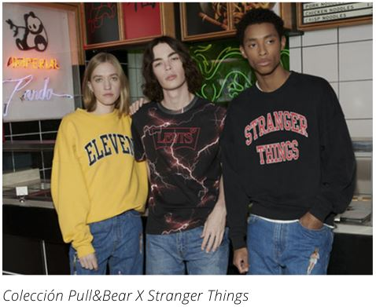
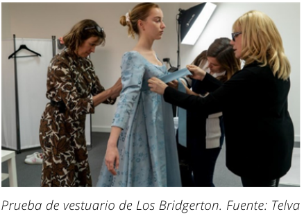
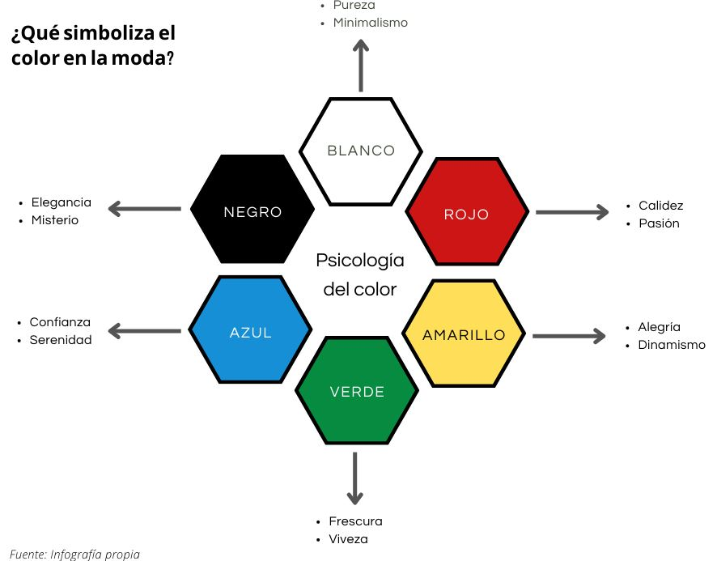

EL PAPEL DE LA MODA EN LA SOCIEDAD A TRAVÉS DE LOS MEDIOS
Es bien sabido por todos que vivimos en un mundo globalizado, donde las nuevas tecnologías nos dan acceso a información en tiempo real desde cualquier lugar del planeta. Esto hace que los medios de comunicación de masas generen una gran cantidad de discursos dirigidos a una audiencia determinada. Los individuos seleccionamos una pequeña porción de ello para crear nuestra propia visión de la realidad. Y es por eso, que los medios procuran hacer atractivos ciertos productos y les otorgan un valor simbólico. La moda no deja de ser un artículo que tiene incorporado un significado colectivo, haciendo una diferenciación y ayudando a la construcción de la identidad de cada individuo.
En la actualidad, gracias a la variedad de la moda, cada individuo puede encontrar su propio estilo. Y es ese individuo el que debe decidir en la sociedad de consumo como se quiere mostrar ante ella. Por eso, se puede decir que la moda sirve a modo de tarjeta de presentación. Asimismo, ayuda en la interacción social, ya que la imagen externa condiciona cómo nos ven los demás y ofrece una idea de cómo somos, qué nos gusta, cómo pensamos, etc.
En esta construcción de la identidad, se aprecia la capacidad comunicativa de la moda en tanto que consumimos lo que más nos representa o lo que queremos representar. Sin embargo, en algunas ocasiones, los individuos consumimos prendas que son tendencia en un momento concreto y que no se asemejan a nuestros valores, como respuesta a la interiorización de los discursos culturales que por ejemplo lanzan los medios sociales de comunicación. A su vez, llama la atención el hecho de que aun teniendo la libertad individual de tomar decisiones a la hora de cómo nos mostramos al mundo, en la vida cotidiana, observamos que la mayor parte de la sociedad repite unos patrones que les hacen parecer uniformados. Es el reflejo de que, en la moda, las personas buscan seguridad y aceptación, a la vez que pertenecer a un grupo social. Pero la moda goza de ese poder de permitirnos pertenecer a algo sin dejar de mostrar nuestra personalidad y con esa función de distinción. Y al final, la moda cambia al mismo tiempo que cambiamos los individuos, se va desarrollando con nosotros y nos concede la posibilidad de adecuarnos al transcurso de nuestras vidas. Por eso, es necesario ser capaces de analizar en profundidad quiénes somos y demostrarlo, de lo contrario, muy difícilmente podremos entender quiénes son los demás.
 Por su parte, los jóvenes son el grupo social más vulnerable a los efectos de la moda, ya que están desarrollando su personalidad, y es aquí donde puede surgir un conflicto. Es un medio de expresión muy potente mediante el que se les permite comunicar su punto de vista del mundo y sentirse parte de un grupo. Esa pertenencia al grupo a través del estilo, se ve también influenciada por los paradigmas del consumo y marketing de moda. Los jóvenes se sienten únicos tanto en su identidad como en su forma de vestir, aunque en realidad no dejan de vestir según dicta la industria textil. En el caso de series como Stranger Things y Sex Education , que tienen un público objetivo joven, los personajes funcionan como personas mediáticas que hacen llegar las novedades de la moda a la sociedad, difundiendo imágenes de forma continua e insistente con el afán de configurar una determinada cultura visual. Esos ídolos de masas, se convierten en figuras de imitación. Y los adolescentes, inconscientemente, siguen a dichos líderes para intentar destacar, algo que acaba creando una serie de diferencias sociales a través de la forma de vestir.
Psicología de la moda
Como he mencionado, la moda guarda una estrecha relación con la identidad, ya que expresa a los demás, información muy relevante sobre nuestro género, clase, posición, etc., a pesar de que cada vez se están rompiendo más las barreras entre diferentes grupos o colectivos.
Por todo ello, considero fundamental situar estas ideas dentro del concepto de psicología de la moda, que según reveló la experta en el tema, Dawnn Karen, en un artículo del New York Times , es “el estudio y el tratamiento de cómo el color, la imagen, el estilo y la belleza afectan el comportamiento humano, mientras abordan normas y sensibilidades culturales”. La psicología de la moda pone el foco entre la vestimenta y la actitud; ya no solo se trata de cómo te ves con las prendas, sino de cómo te hacen sentir.
El acto de elegir la ropa que utilizamos tiene que ver con los sentimientos, con los recuerdos, situaciones y motivaciones de la infancia. Asimismo, se ve influenciado, por un lado, por factores que configuran el ambiente del individuo, como pueden ser el género, la edad, los valores, la ideología, las experiencias y los sentimientos, los modelos de conductas, la familia, la educación, la sociedad. los medios de comunicación, los grupos de referencia y los grupos de pertenencia, los ídolos y la situación económica, entre otros.
La moda como herramienta psicológica y de comunicación
La moda como herramienta psicológica es un recurso de amplio recorrido en las artes escénicas. Una de las funciones principales del vestuario es comunicar, y en las series no es la excepción. A través de la ropa el espectador puede percibir la condición psicológica, social y emocional de cada personaje. El vestuario es el encargado de crear la estética de los personajes, junto con los actores, y además aporta información mediante colores, texturas y siluetas dentro de la imagen, que ayudan a reforzar la narrativa de la película. De ahí que la tarea del diseñador de vestuario incluya la investigación previa de los personajes, el manejo del presupuesto para la creación de las prendas, hacer distintas pruebas y modificaciones que se ajusten al intérprete, y preparar los outfits para cada día de rodaje, entre muchas otras actividades.
 El cometido que tiene el vestuario dentro de la escena es el de contextualizar y dar pistas o señales al espectador sobre cómo son los personajes, lo que está ocurriendo o lo que está por suceder. El vestuario es la representación visual de la psicología y el carácter del personaje, por lo cual debe comunicar todo lo que este es en esencia, sin necesidad de que el actor hable. Por lo tanto, cada detalle debe tener su razón de ser, desde la silueta, el corte y las piezas, hasta el material, la textura y el color.
En este proceso de aceptación o rechazo de la moda, intervienen decisivamente cuatro motivaciones principales. Primero, el deseo de integración, puesto que la moda establece unas pautas de lo que es aceptado y rechazado por la sociedad, haciendo que los individuos no desentonen del grupo porque adquieren un aspecto similar. La moda consigue tener esa capacidad de integración y regulación en la sociedad. Para que un individuo sea aceptado, se deben seguir ciertos modelos y valores estéticos, por lo que el aspecto físico juega un papel decisivo cuando intentamos ser atractivos para los demás, siendo uno de los puntos clave la mitología del éxito, de la belleza y de los papeles y posiciones sociales. En segundo lugar, se encuentra el deseo de diferenciación, o lo que es lo mismo, la búsqueda por distinguirse del resto y afianzar su propia personalidad. Esto supone integrarse, pero sin perder nuestra identidad, debido a la necesidad de poseer cierta singularidad y originalidad. A continuación, cabe señalar el erotismo, que se relaciona con la función de la ropa de tapar determinadas partes del cuerpo y protegerlo del clima. A la vez, cubrirlo para ocultarlo de las miradas ajenas. Sin embargo, en la actualidad el deseo de ver y ser vistos se ve de una forma más positiva y se promueve el estímulo de mostrar ciertas zonas. Y, por último, la saturación del gusto condiciona que la moda sea aceptada o no, ya que la constante evolución de esta y la sustitución de unas modas por otras supone realizar cambios para adaptarse al desarrollo de la sociedad.
¿Y qué dicen los colores en la moda? Pues bien, los colores de nuestra ropa hablan, estamos emitiendo mensajes todo el tiempo a través de nuestras elecciones de armario, y en muchos de los casos no lo sabemos. Mientras que el blanco simboliza la pureza y el minimalismo, el rojo significa calidez y pasión. La relación con los colores es un tema fascinante a nivel emocional. Sea en el mundo de la moda, publicidad o marketing, está más que comprobado que psicológicamente podemos vernos influenciados por el uso e impacto de los colores, y eso sin duda es una herramienta a explotar cuando se trata de la imagen de los personajes de una serie o película.
En fin, los medios de comunicación de masas, entre los que podemos encuadrar a la plataforma de streaming Netflix, permiten acceder a la moda de manera totalmente inmediata, invitando y seduciendo a sus fans a imitar a sus modelos a seguir mediante su cultura visual y a guiarlos hacia el camino del consumo. No obstante, la ventaja que ofrece la moda es que nos sirve para mostrarnos y para identificar a los demás, en base a reglas generales establecidas en la sociedad. De igual forma que nos hace ver más allá en los personajes, especialmente cuando es la primera vez que nos los presentan. La vestimenta tiene la fuerte capacidad de comunicarnos un mensaje y de que nos identifiquemos con unos u otros referentes audiovisuales, porque, al fin y al cabo, es un lenguaje como cualquier otro, repleto de signos y con una oración sintáctica, en la que el sujeto somos nosotros y el predicado es lo que comunicamos.
© 2022 - Andrea Higuera Herrero
QUÉ COMUNICA LA MODA A TRAVÉS DE LAS SERIES DE NETFLIX